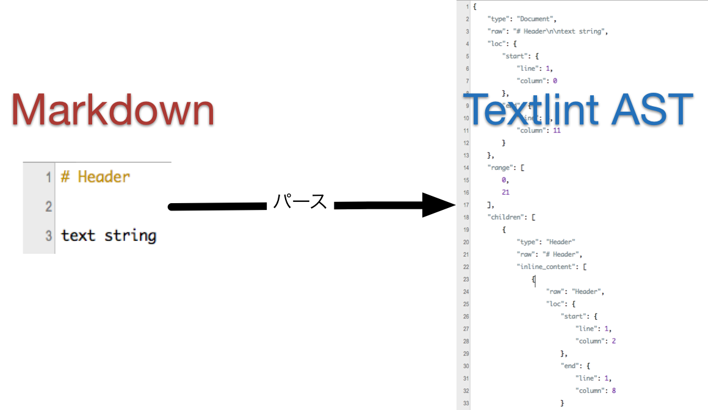
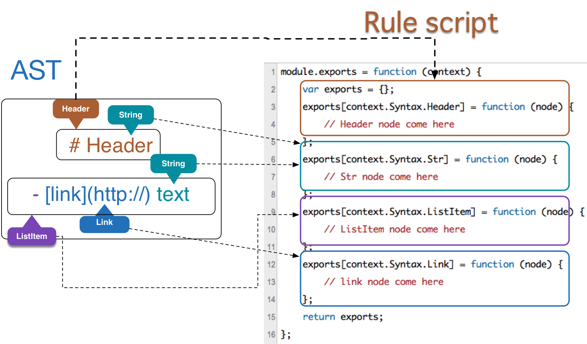
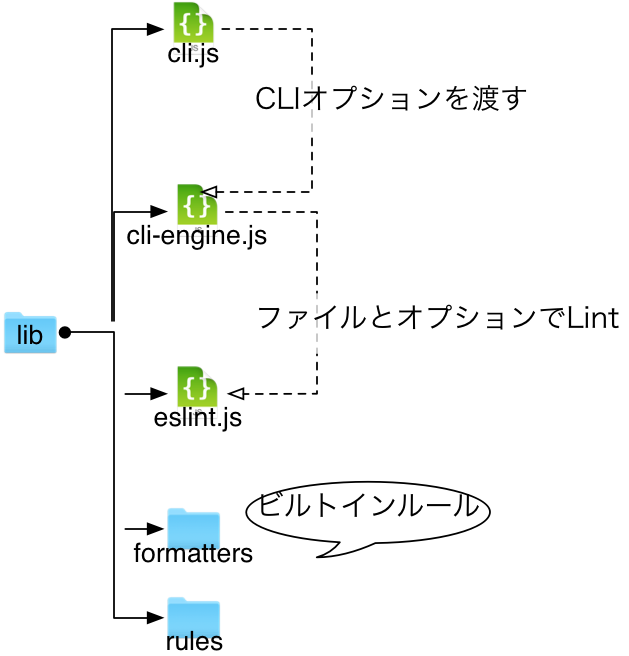

textlintから学んだこと
自己紹介

azu
@azu_re
Web scratch, JSer.info
アジェンダ
- What is textlint?
- CLIツールの設計思想
- ASTのLintの仕組み
- モジュールに分けるべし
- インターフェースとしての問題
- ドキュメントとしての問題
- ドキュメント JSDocとd.ts
textlint とは何か
- MarkdownやテキストをLintするツール
- ESLintのテキスト版！
- MarkdownやテキストをASTにしてチェックする
- チェックルールをJavaScriptで書いて簡単に追加出来る
Lintの仕組み
- Markdown or TextをASTに変換
- ASTはTxtNodeというインターフェースを持つ
- 例えば、
node.typeが"Header"という種類 node.rawにテキストの中身、node.locに行番号等の位置- txtnode.d.tsに定義してある
- 例えば、
Lintの仕組み - 2
- ルールスクリプトは
node.typeごとにイベントを受け取るような書き方をする
exports[context.Syntax.Link] = function (node) {
// Link nodeの時にこのチェック関数が呼ばれる
// 問題があったらcontext.report()で報告する
};
- textlintはnodeの
type毎にルールにチェックをお願いするapi.emit(node.type, node)という感じ
Markdown -> AST


Lintの仕組み - 3
context.report()で報告されたエラーをtextlint-formatterに- 文字列を組み立ててくれるのでそれを標準出力へ流す or ファイルとして吐く

仕組みの仕組み
- textlintとルールスクリプトの関係はpub/sub
- ルールスクリプトはやってくるnodeだけを考えればLintを書ける
- やってくるnodeの流れは木構造を走査する形 - txt-ast-traverse
- ルールが疎結合なので、自由にルールを追加出来る！

textlintとESLint
- textlintはESLintのfork的な作りで始めた
- ESLintの構造をそのままもってきて分解していった
ESLintの構造
- cli.js
- コマンドライン引数の処理
- cli-engine.js
- 設定の読み込み、Core APIのラッパ、複数のファイルを扱ったり
- eslint.js(Core)
- 実際に
emitしたりLintするAPIを持つ
- 実際に

ESLintの公開API
- package.jsonの
"main"でexportsされてるモジュールだけでは、微妙に届かないAPIが存在する
module.exports = {
linter: require("./eslint"),
cli: require("./cli"),
CLIEngine: require("./cli-engine")
};
ESLintの公開API の問題
- adametry/gulp-eslintみたいなラッパを書く場合に、formatterを正規な方法で取得できない
require('eslint/lib/config');という感じで読んだりnode_modulesから自分で取り出す事が必要(ESLintの内部で同じ事やってる)
どこまで公開APIか
- 何でも公開APIにする?
- 面倒だし、すぐに壊しそう
- => それぞれの機能を別モジュールとして公開すれば自然と解決する
- formatter、parser、traverse
- 同様のやり方: twada/power-assert
textlintの場合
- azu/textlint-formatter を別モジュールとして出してる
- azu/markdown-to-ast と azu/txt-to-ast パーサも分離してる
- azu/txt-ast-traverse Traverseも分離してる
module.exports = {
cli: require("./lib/cli"),
TextLintEngine: require("./lib/textlint-engine"),
textlint: require("./lib/textlint")
};
公開APIはどこまで公開API?
- 目安としたもの:
- gulpプラグインを書く場合に、CLIと同じことをやるのにモジュールを使うだけでできるか?
[fit] モジュールとドキュメントの分離
ドキュメントも分離するべきか?
- ソフトウェアがでかくなる = ドキュメントがでかくなる
- 新規ユーザーはどこから見ればいいのか分からない
- ユーザーの種類を分けてドキュメントを分ける
- コマンドラインアプリとして使うユーザー (READMEに入れる)
- Nodeモジュールとして使う開発者 (docs/に入れる)
- READMEはできるだけキレイに保つ必要がある
モジュールのドキュメント :thought_balloon:
- モジュールとして使うのは大体開発者
- 分離するかはライブラリの種類によってケースバイケース
- 類似APIなら一枚岩のドキュメントの方が検索できて便利?
- 単体として完全に分離できてるならそのモジュール毎にドキュメントがあったほうがいい
- 索引だけはプロジェクトからリンクされてると良さそう
まとめ
- どのAPIを公開するか迷ったら、それより小さいモジュールに分けて別途公開できないかを考えよう
- コード共にドキュメントも肥大化する
- モジュールとして分けるとドキュメントも分けやすい
- ただ、利用者が迷子にならないように整理が必要
- 小さいモジュールを大量に作った場合の問題も別にある
- Modularizing Underscore.js | &yet Blog
課題。。
READMEとAPI
- READMEにAPIの詳細をずらっと書くとあんまり読みやすくない
- JSDocそのままREADMEに落とした感じのとか
- 適度に情報を間引く必要がありそう
- サンプルコードの方が視認性は高い
JSDocとd.tsの使い分け
- d.tsはオプションオブジェクトの定義が楽に出来る
- 型定義的には使いやすい
- 逆に全てのインターフェースの定義はだるい
- JSDocは関数の説明はしやすい
- ドキュメントとしてはd.tsよりもやりやすい
- Javadoc ドキュメンテーションコメントの書き方 - Qiita
JSDocとd.tsの使い分け
- azu/textlint-formatter
- d.tsとJSDocが混在してる
- 書きやすいけど、解釈出来るものがWebStormぐらいしかなさそう…
- TypeScriptのASTが公開されたらd.ts周りのツールが充実するかもという希望的観測
d.tsで定義した型をJSDocで使ってる
declare module TextLintFormatter {
function format(results:TextLintResult[]):string;
// createFormatter(options)
interface options {
// formatter file name
formatterName?: string;
}
}
不完全なd.ts配布の問題
- モジュールを細分化していくとインターフェースの共有をしたくなる
- d.tsを使いたい => けど何で配布する?
- d.tsがあるだけのモジュールをつくるべきなのか?
- 全てのAPIについて定義してるわけじゃなくて完全にInternalの利用